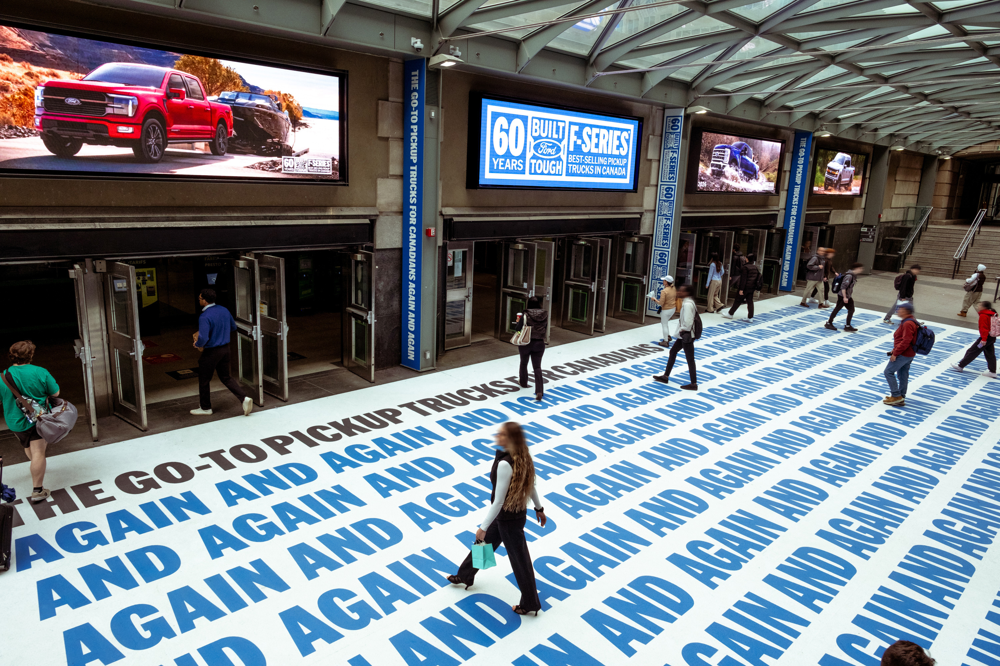
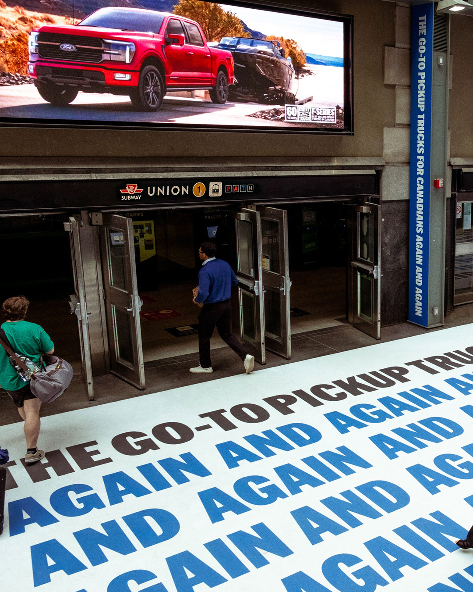

60 Years of F-150
Ford trucks have been best-selling in Canada for a long, long time. But how can Ford talk about a sales record without sounding, well, like they're talking about a sales record? By focusing on the drivers themselves, and what they've had in common over the course of the past 60 years. Namely, that they've chosen to live the kind of hard-working, adventure-seeking, gear-hauling lives that call for a Ford.
For the film, we worked with our editor, Nina, to create an anthem that brought real driver footage together with UGC and recent vehicle shoots. The result is a pretty sick film that resonated really well with Canadians.
We also wanted to get across just how long 60 years actually is. So, across screens at Canada's busiest train station, we paired F-Series models from every year since 1966, with a simple message (repeated 60 times).
Ford Canada - 60 Years


Union Station Takeover